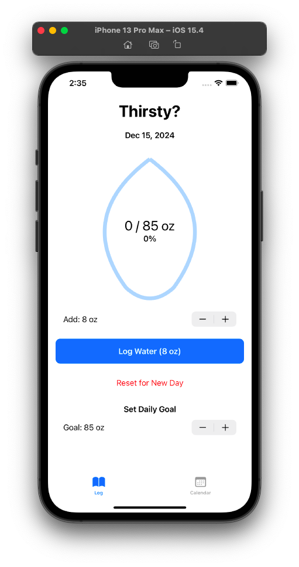
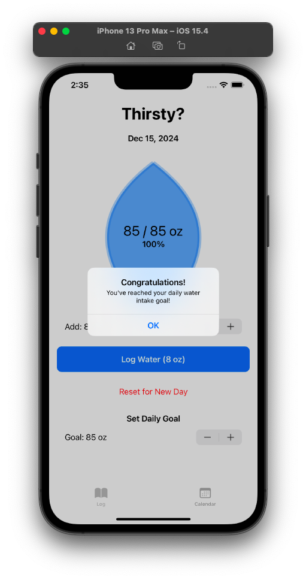
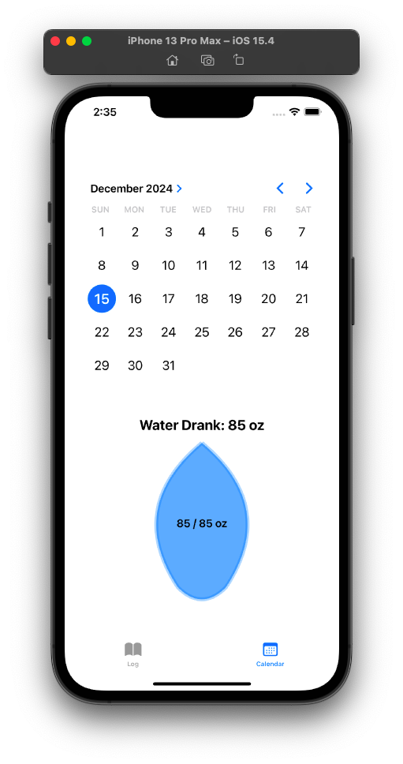

Water Tracker
Description: WaterTracker is a SwiftUI application designed to help users track their daily water intake and manage their hydration goals.
Technology: Xcode, Swift
Challenges:
This was a group project, so one of the key challenges we faced was communication.
Additionally, we encountered difficulties when implementing both landscape and portrait modes.
Outcome: We successfully developed a daily water tracker app that allows users to easily log their water consumption with a customizable amount per entry. The app features a daily goal setting option, where users can track their progress with a visual indicator. Each day, users can reset their intake for a fresh start, and the progress is visually represented using a teardrop-shaped animation. Additionally, the app offers a calendar view, enabling users to select any date to review their past water intake and progress. To ensure data is saved, we utilized persistent storage with UserDefaults, allowing daily water records to be securely stored.
  Here is the GitHub link to the project: Water Tracker